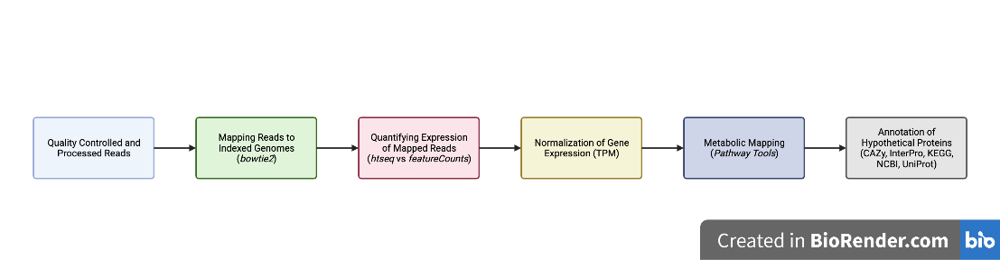
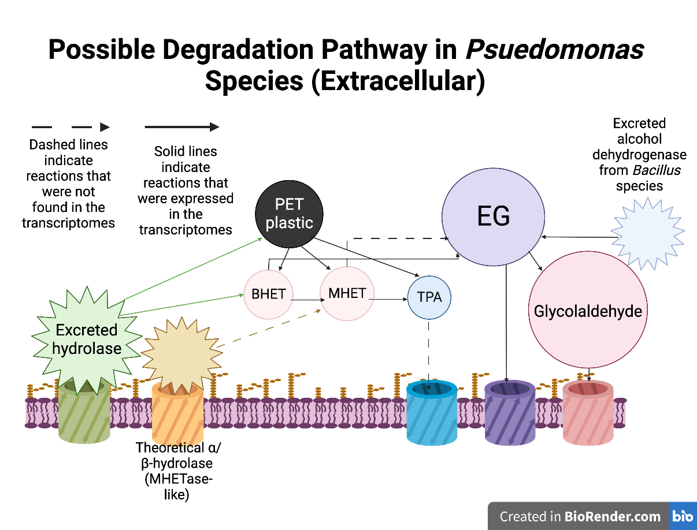

Biodegradation of PET Plastic: RNA-seq Analysis and Enzyme Discovery
bioinformatics, RNA-seq, PET degradation, enzymes, biodegradation, plastic waste, Reed College, Willamette University, data wrangling
This project was the focus of my undergraduate thesis at Willamette University, conducted with Dr. Rosa León-Zayas and Grace Sheehan. The goal was to identify enzymes involved in the biodegradation of polyethylene terephthalate (PET) plastic using bioinformatics and RNA-seq analysis.
Workflow
- Experimental design
- Bacteria were exposed to PET plastic, and RNA was sequenced to capture gene expression changes.
- Pipeline development
- Built a custom RNA-seq pipeline for cleaning, alignment, and expression analysis (Fig. 1).
- Ensured reproducibility and accuracy despite data loss in one control group.
- Built a custom RNA-seq pipeline for cleaning, alignment, and expression analysis (Fig. 1).
- Gene and enzyme analysis
- Identified abnormal expression patterns linked to PET exposure.
- Mapped expression results to protein and enzymatic functions.
- Identified abnormal expression patterns linked to PET exposure.
- Metabolic pathway reconstruction
- Proposed a hypothetical pathway for PET degradation (Fig. 2).
- Validated results against enzyme databases and literature.
- Proposed a hypothetical pathway for PET degradation (Fig. 2).
Results
Through database searches, we found evidence of previously uncharacterized enzymes that may contribute to PET degradation. The metabolic pathways constructed from RNA-seq data showed promising targets for future biodegradation research.


Discussion
This work resulted in a publication and a conference presentation:
- Presented at the Murdock College Science Research Conference
- Published in the International Journal of Molecular Sciences:
👉 Microbial Consortia and Mixed Plastic Waste: Pangenomic Analysis Reveals Potential for Degradation of Multiple Plastic Types via Previously Identified PET Degrading Bacteria
The findings suggest opportunities for developing natural waste treatment systems using bacteria, as well as the possibility of engineering organisms to synthesize new plastic polymers from waste.
Acknowledgments
This project was supported by the National Science Foundation (NSF), the Murdock Trust, and our collaborators at Reed College.
Oliver F. Anderson, MS – Computational Biologist, Data Scientist, and Research Consultant based in Portland, Oregon. I design data-driven solutions in bioinformatics, machine learning, and AI automation for research and biotech.
Back to top